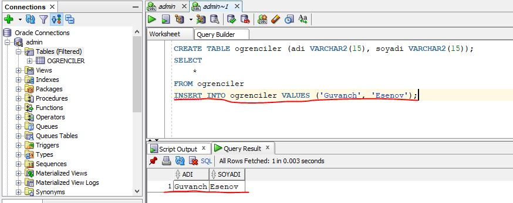

Bir veritabanı çoğunlukla bir veya daha fazla tablo içerir. Her tablo bir isim ile tanımlanır (ör. "Customers" veya "Orders"). Tablolar veri içeren kayıtları (satırlar) içerir.
Şimdi sizlere basit bir şekilde veritabanına yablo nasıl eklenir onu görelim:
Tablo ekleme komutumuz CREATE TABLE komutu.
Kullanılışı CREATE TABLE tablo_ismi (sütun isimleri ve değerleri)
Ör. SQL development de CREATE TABLE ogrenciler(adi VARCHAR2(15), soyadi VARCHAR2(15)); komutunu yazıp, bu kodu çalıştırırsak, ogrenciler isimli bir tablo oluşturur ve tabloda adi ve soyadi isimli yazı değerleri alan iki sütun oluşturmuş oluruz.
Şimdi ise bu oluşturduğumuz tabloya veri eklemeyi görelim. tabloya veri eklemek için "INSERT INTO" komutunu kullaniyor.
Kullanılışı INSERT INTO tablo_ismi VALUES(veri degerleri)
Ör.SQL development de INSERT INTO ogrenciler VALUES ('Guvanch', 'Esenov'); komutunu yazıp, bu kodu çalıştırırsak, ogrenciler isimli tabloya adi degeri "Guvanch" ve soyadi degeri "Esenov" olan bir veri eklemiş olur.

Kısaca tablo nasıl oluşturulur ve tabloya veri nasıl eklenir onu görmüş olduk. Eğitimde kullancağımız veritabanınını aşağıdakı linkten indirip komutları kopyalayıp sql developmentde çalıştırısanız siz de o veritabanını eklemiş olursunuz.
Veritabanı linki:https://drive.google.com/file/d/1Uoi7TjdvFRHqm2KKJ9KFu_Kti5-0VJvL/view?usp=sharing
Aşağıda "employees_old" tablosundan bir seçim bulunmaktadır:
Yukarıdaki tablo, 17 kayıt (her çalışan için bir) ve 8 sütun (EMPLOYEE_ID, EMPLOYEE_NAME, JOB, MANAGER_ID, HIREDATE, SALARY, COMMISSION,DEPARTMENT_ID) içerir.
SELECT ifadesi, bir veritabanından veri seçmek için kullanılır.
Döndürülen veriler, sonuç kümesi adı verilen bir sonuç tablosunda saklanır.
Kullanılışı SELECT sütun1, sütun2, ...
FROM tablo_ismi;
Burada, sütun1, sütun2, ..., içinden veri seçmek istediğiniz tablonun alan adlarıdır.
Tabloda bulunan tüm alanları seçmek istiyorsanız, aşağıdaki komutu kullanın:
Kullanılışı SELECT * FROM tablo_ismi;
Ör.Bizim employees_old tablosundan sadece çalışanların ismini ve maaşlarını görmek istiyorsak: SELECT employee_name, salary FROM employees_old; komutunu yazıp, bu kodu çalıştırırız.

SELECT DISTINCT ifadesi, yalnızca farklı değerler döndürmek için kullanılır. Tekrarlayan satırları tek bir değere indirger.
Bir tablonun içinde, bir sütun genellikle birçok yinelenen değer içerir; ve bazen yalnızca farklı değerleri listelemek istediğinizde kullanılır:
Kullanılışı SELECT DISTINCT sütun1, sütun2, ...
FROM tablo_ismi;
Ör.Bizim employees_old tablosundaki department_id sütunundaki farklı değerleri görmek istiyorsak: SELECT DISTINCT department_id from employees_old; komutunu yazıp, bu kodu çalıştırırız.
Farklı department_id verilerin sayısını listelemek için aşağıdaki komutu kullanırız:
SELECT DISTINCT department_id from employees_old;
ORDER BY operatörü sonuç kümesini artan veya azalan düzende sıralamak için kullanılır.
ORDER BY operatörü kayıtları varsayılan olarak artan sırada sıralar. Kayıtları azalan sırada sıralamak için DESC anahtar sözcüğünü kullanın.
Kullanılışı SELECT * FROM tablo_ismi
ORDER BY sütun_ismi;
Ör.Bizim employees_old tablosundaki çalışanları isimlerine göre sıralamak istersek: SELECT * from employees_old ORDER BY employee_name; komutunu yazıp, bu kodu çalıştırırız.
WHERE operatörü kayıtları filtrelemek için kullanılır. Sorgu ifadesinde kısıtlama,sınırlama , filtre yapmamızı sağlar.
WHERE operatörü yalnızca belirli bir koşulu karşılayan kayıtları çıkarmak için kullanılır.
Kullanılışı SELECT sütun1, sütun2, ...
FROM tablo_ismi
WHERE koşul;
Ör.Bizim employees_old tablosundaki çalışanlardan ismi "CLARK" olani seçmek istersek: SELECT * FROM employees_old WHERE employee_name = 'CLARK' komutunu yazıp, bu kodu çalıştırırız.

Ör.Bizim employees_old tablosunda mesleği "SALESMAN" olanların içinden maaşı 1300 den yüksek olanları görüntülemek istersek: SELECT * FROM employees_old WHERE job = 'SALESMAN' AND salary > 1300 komutunu yazıp, bu kodu çalıştırırız.

Ör.Bizim employees_old tablosunda mesleği "SALESMAN" olanları YA DA maaşı 2500 den yüksek olanları görüntülemek istersek: SELECT * FROM employees_old WHERE job = 'SALESMAN' OR salary > 2500 komutunu yazıp, bu kodu çalıştırırız.
Ör.Bizim employees_old tablosunda mesleği "SALESMAN" olmayan tüm çalışanları görüntülemek istersek: SELECT * FROM employees_old WHERE NOT job = 'SALESMAN' komutunu yazıp, bu kodu çalıştırırız.